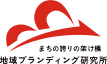

地域ブランディング研究所 中途採用サイト
地域ブランディング研究所中途採用サイト地域ブランディング研究所は、持続可能で稼げる日本の地域づくりに向けて様々なことを仕掛けている集団です。同時に、将来的にあらゆる課題に対して課題解決していけるようなスキルを持った人材を輩出していくことを目指しています。
その根底には、これからのまちづくりにおいて、そのスキルを活かして雇用形態や勤務地にとらわれることなく、日本各地で活躍してもらいたいという想いがあります。
昨今、リモートワークやパラレルワークなど世の中の働き方が大きく変化し始めています。それらを柔軟に導入していくことで世の中にインパクトを与えるより多くの多様な人材を育てることができれば、と考えています。
正直、全てが初めからうまくいくとは考えていません。ただ、「どうせやるならおもろい方がいい」「ほかがやっていないことをやった方がおもろい」という考えから、トライアンドエラーを繰り返しながら「どうすればおもろく仕掛けていけるか」を追求しています。すでに、週３・４勤務で次のステップに向けて準備をしているスタッフもいます。
まだまだ人数も少ないスタートアップなので、入社後にいきなり任される業務は多いです。やったことのないことを任されることもあります。即戦力として挑戦したい方、裁量権を持って活躍したい方、スピード感をもって仕事をしたい方には、刺激的な場所だと思います。
一緒に日本をもっと面白い国に変えていきましょう！
私たちが中途の方に求めるものは、ほかの会社とは違うかもしれません。代表メッセージにもあるように、わたしたちたちは、まちの未来を創っていきたいと考えている集団です。
面接では、「すでに持つスキル」よりも「未来に対して抱いている夢」を教えていただきたいと思っています。どんなことがやりたいのかをぜひゆっくり聞かせてください。エントリーをお待ちしております。
新卒で大手総合情報サービス業の企業に入社し、住まい情報事業部にて関東と関西で勤務。その後、もともと好きだった「地域」というテーマを軸に、ブランディングや企画を学びたいと転職を決意。負けず嫌いな性格と責任感の強さから営業力に定評あり。空間づくりにも興味が高く、既存のものにとら割れることなく「まちをよくしていくため」の提案を考え、業務改善などにも積極的に取り組んでいる。
転職して、まずみんなの働き方に驚きました。年次に関係なく全員が互いを気にかけ、相手の業務を把握し、スピード感を持って助け合いながら様々なことを同時に進める。前職では想像もしなかったこの働き方に始めは苦戦しましたが、チーム意識が高まり、視野が広くなったように思います。私のチームでは、企画から営業、冊子制作までを一人で担っていて、とにかくやることが多くて大変なのですが、その分案件への愛着は深まり「私ならでは」の価値をつけることができ、やりがいと達成感がとてもあります。
何より大きく変わったのは会社が居場所の一つになったことです。私は自分の考えを発したり、自分らしさを出すのが苦手でした。しかし、ここではみんなが本音を言い合って本気で仕事をしているので、私も不思議と素を出して働けるようになり、仕事に熱中する時間も増えました。その結果、納得できる仕事ができているので本当に心地いいです！会社の雰囲気もアットホームで、かなり自由です（笑）みんな好きなところで自由に仕事をしています。わいわいするイベントがたくさんあり、メンバー同士もすぐに仲良くなりますが、やることはやるという社風なのでオンオフが切り替えやすく、働きやすいのも重要なポイントだと思います。
化粧品会社の営業職として経験を積んだのち、かねてから興味のあったライターやマーケティング職をより深く勉強するため転職。会社を一つに絞る必要はないという自身の考えや、大手企業の副業解禁という背景を受けて、パラレルワークを決意。地域ブランディング研究所では週3勤務の中で、webマーケティングや記事の執筆を行い、他社で専属のwebライターとしても活躍している。
好きなことを仕事にし、仕事と遊びの境目をなくすことや生活のすべてを仕事のアイデアにすることに憧れていました。今、複数の環境に身を置くことでまさに自分の求める働き方をし、日々の経験が新たな発見で充実した日々を過ごせています。地ブラでは、『建築・まちづくり』をキーワードに様々な経験を積ませてもらっています。前職に比べ、ここには熱量の高い想いを同じかそれ以上で返してくれたり、自分よりも相手を思いやれるメンバーが揃っていると感じます。
また、柔軟な意思共有や何事にも挑戦してみる風土は新鮮です。面白そうであれば、意味があれば何でも取り入れるからこそ、まだ一般的ではない時間や場所にとらわれない働き方ができていると思います。各自のアイデアや情報を共有するスピードも早く、組織としてアイデアを発展・具現化させやすいとも感じます。パラレルワークはどの仕事も中途半端になるリスクをはらみますが、周囲の理解さえあれば、役割やタスクを明確化し、バランスを取ることができます。ここはそれがとても心地よい環境だと思います。
地域へ徹底的に入り込み、地域の魅力・誇りを発掘・発信します。在住者にはまちの魅力を再認識してもらい、来訪者には訪問をきっかけに交流拡大につなげていきます。最終的には定住拡大に繋げることで住んでよし、訪れてよしのまちづくりに貢献します。

各地域・施設への訪日観光客誘致。海外20ヶ国900社以上・国内200社以上の独自に構築した旅行会社ネットワークを駆使し、徹底した国別マーケティング・コンサルティング及び営業サポートをすることで確実な集客まで手伝っています。

日本のまちをより世界に誇れるものに変えていくことを目標に、日本の地域活性化・まちづくりを担う若者の育成・啓蒙。学校だけでは得られないことを学べる機会を提供しています。特に建築や都市開発に熱い想いを持った学生とオリンピック後の日本のまちを変革していく企業とをマッチングも行っています。